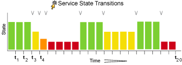

Icinga supports optional detection of hosts and services that are "flapping". Flapping occurs when a service or host changes state too frequently, resulting in a storm of problem and recovery notifications. Flapping can be indicative of configuration problems (i.e. thresholds set too low), troublesome services, or real network problems.
Before we get into this, it is time to say that flapping detection has been a little difficult to implement. How exactly does one determine what "too frequently" means in regards to state changes for a particular host or service? When Ethan Galstad first started thinking about implementing flap detection he tried to find some information on how flapping could/should be detected. He couldn't find any information about what others were using (where they using any?), so he decided to settle with what seemed to him to be a reasonable solution...
Whenever Icinga checks the status of a host or service, it will check to see if it has started or stopped flapping. It does this by:
Storing the results of the last 21 checks of the host or service [1]
Analyzing the historical check results and determine where state changes/transitions occur
Using the state transitions to determine a percent state change value (a measure of change) for the host or service
Comparing the percent state change value against low and high flapping thresholds
A host or service is determined to have started flapping when its percent state change first exceeds a high flapping threshold.
A host or service is determined to have stopped flapping when its percent state goes below a low flapping threshold (assuming that is was previously flapping).
[1] Results for services in a SOFT state are not stored unless when they return to an OK state.
Let's describe in more detail how flap detection works with services...
The image below shows a chronological history of service states from the most recent 21 service checks. OK states are shown in green, WARNING states in yellow, CRITICAL states in red, and UNKNOWN states in orange.

The historical service check results are examined to determine where state changes/transitions occur. State changes occur when an archived state is different from the archived state that immediately precedes it chronologically. Since we keep the results of the last 21 service checks in the array, there is a possibility of having at most 20 state changes. In this example there are 7 state changes, indicated by arrows in the image above.
The flap detection logic uses the state changes to determine an overall percent state change for the service. This is a measure of volatility/change for the service. Services that never change state will have a 0% state change value, while services that change state each time they're checked will have 100% state change. Most services will have a percent state change somewhere in between.
When calculating the percent state change for the service, the flap detection algorithm will give more weight to new state changes compare to older ones. Specfically, the flap detection routines are currently designed to make the newest possible state change carry 50% more weight than the oldest possible state change. The image below shows how recent state changes are given more weight than older state changes when calculating the overall or total percent state change for a particular service.

Using the images above, lets do a calculation of percent state change for the service. You will notice that there are a total of 7 state changes (at t3, t4, t5, t9, t12, t16, and t19). Without any weighting of the state changes over time, this would give us a total state change of 35%:
(7 observed state changes / possible 20 state changes) * 100 = 35 %
Since the flap detection logic will give newer state changes a higher rate than older state changes, the actual calculated percent state change will be slightly less than 35% in this example. Let's say that the weighted percent of state change turned out to be 31%...
The calculated percent state change for the service (31%) will then be compared against flapping thresholds to see what should happen:
If the service was not previously flapping and 31% is equal to or greater than the high flap threshold, Icinga considers the service to have just started flapping.
If the service was previously flapping and 31% is less than the low flap threshold, Icinga considers the service to have just stopped flapping.
If neither of those two conditions are met, the flap detection logic won't do anything else with the service, since it is either not currently flapping or it is still flapping.
Icinga checks to see if a service is flapping whenever the service is checked (either actively or passively).
The flap detection logic for services works as described in the example above.
Host flap detection works in a similiar manner to service flap detection, with one important difference: Icinga will attempt to check to see if a host is flapping whenever:
The host is checked (actively or passively)
Sometimes when a service associated with that host is checked. More specifically, when at least x amount of time has passed since the flap detection was last performed, where x is equal to the average check interval of all services associated with the host.
Why is this done? With services we know that the minimum amount of time between consecutive flap detection routines is going to be equal to the service check interval. However, you might not be monitoring hosts on a regular basis, so there might not be a host check interval that can be used in the flap detection logic. Also, it makes sense that checking a service should count towards the detection of host flapping. Services are attributes of or things associated with host after all... At any rate, that's the best method I could come up with for determining how often flap detection could be performed on a host, so there you have it.
Icinga uses several variables to determine the percent state change thresholds is uses for flap detection. For both hosts and services, there are global high and low thresholds and host- or service-specific thresholds that you can configure. Icinga will use the global thresholds for flap detection if you to not specify host- or service- specific thresholds.
The table below shows the global and host- or service-specific variables that control the various thresholds used in flap detection.
Object Type |
Global Variables |
Object-Specific Variables |
Host |
||
Service |
Normally Icinga will track the results of the last 21 checks of a host or service, regardless of the check result (host/service state), for use in the flap detection logic.
![[Tip]](../images/tip.png) |
Tip |
|---|---|
|
You can exclude certain host or service states from use in flap detection logic by using the flap_detection_options directive in your host or service definitions. This directive allows you to specify what host or service states (i.e. "UP, "DOWN", "OK, "CRITICAL") you want to use for flap detection. If you don't use this directive, all host or service states are used in flap detection. |
When a service or host is first detected as flapping, Icinga will:
Log a message indicating that the service or host is flapping.
Add a non-persistent comment to the host or service indicating that it is flapping.
Send a "flapping start" notification for the host or service to appropriate contacts.
Suppress other notifications for the service or host (this is one of the filters in the notification logic).
When a service or host stops flapping, Icinga will:
Log a message indicating that the service or host has stopped flapping.
Delete the comment that was originally added to the service or host when it started flapping.
Send a "flapping stop" notification for the host or service to appropriate contacts.
Remove the block on notifications for the service or host (notifications will still be bound to the normal notification logic).
In order to enable the flap detection features in Icinga, you'll need to:
Set enable_flap_detection directive is set to 1.
Set the flap_detection_enabled directive in your host and service definitions is set to 1.
If you want to disable flap detection on a global basis, set the enable_flap_detection directive to 0.
If you would like to disable flap detection for just a few hosts or services, use the flap_detection_enabled directive in the host and/or service definitions to do so.
© 1999-2009 Ethan Galstad, 2009-2017 Icinga Development Team, https://www.icinga.com